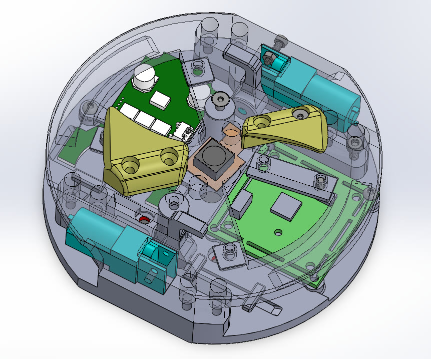
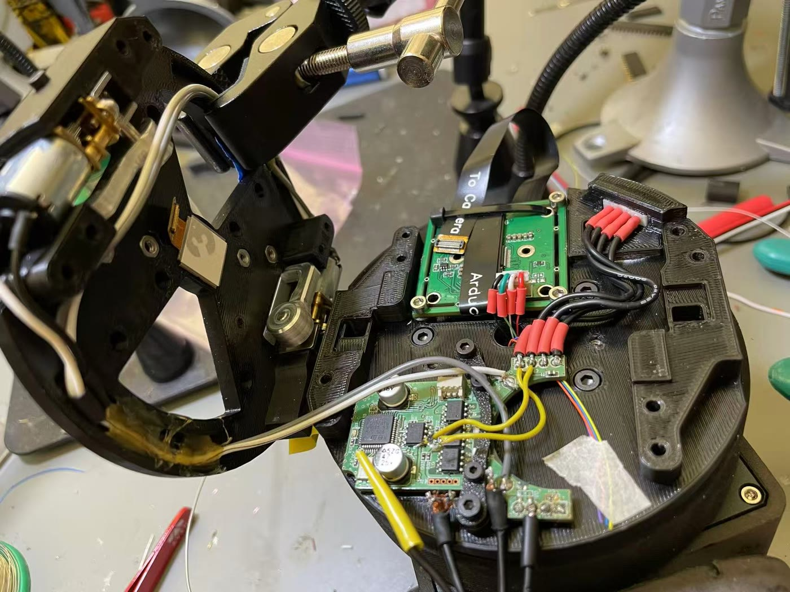

Mechanisms & devices · 2023–2024
LIMMS: Latching Intelligent Modular Mobility System
A reconfigurable delivery robot built around a compact, integrated latching interface.
Overview
LIMMS is a modular robotic system for last-mile delivery. Identical robot modules connect through a latching interface and assemble into different configurations, combining wheeled, bipedal, and quadrupedal locomotion with collaborative manipulation.
The system explores how a common set of modules can handle both moving cargo and navigating the environment around it. Reconfiguration allows the same hardware to take on different roles instead of assigning each delivery task to a separate, specialized robot.
Latching mechanism design and integration
My contribution
I developed the initial latching concept into an integrated module for the LIMMS platform. My work brought together the mechanical latch blades, micro-servos, motor drivers, and an onboard camera for vision-based processing.
A slip ring connects the latch to the main robot body, maintaining power and data transmission while allowing unrestricted 360-degree rotation. The final mechanism supports the module’s own weight even at its maximum cantilever, where the load produces the largest moment arm.

